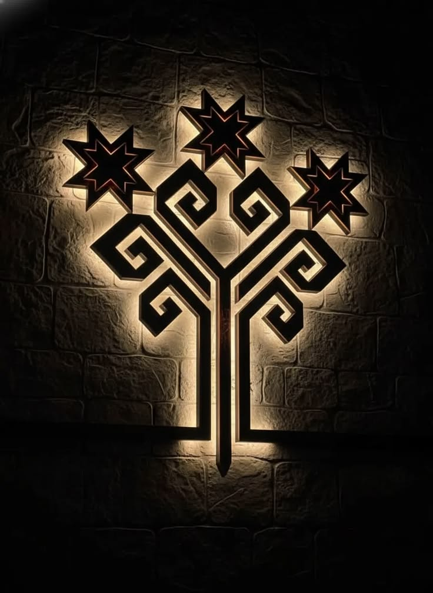

Столица Чувашии, где волжские просторы встречаются с древней культурой. Залив, монумент Матери-Покровительницы, музеи и национальная кухня — всё в одном городе.
Два дня, чтобы влюбиться в город. Проверенный маршрут.
📅 День 1 — Центр и история
Бульвар купца Ефремова — местный «Арбат»
Введенский собор (XVII век) — старейшее здание
Чебоксарский залив и Монумент Матери-Покровительницы
Световой мост через залив (320 м)
Ужин: шурпе и хуплу в национальном кафе
📅 День 2 — Волга и музеи
Московская набережная — прогулка вдоль Волги
Музей истории трактора (можно залезать на экспонаты)
Музей пива — чувашские традиции пивоварения
Чувашский национальный музей
Закат на набережной залива
Чебоксары в деталях
Нажми на карточку, чтобы узнать подробнее.
Мать-Покровительница
Чебоксарский залив
Бульвар Ефремова
Акатуй
Московская набережная
Введенский собор
Музей Чапаева
Художественный музей
Музей вышивки
Музей Сеспеля
Парки и места отдыха
Где погулять, отдохнуть и насладиться природой.
🌳 Парк «Лакреевский лес»
Центральный парк с аттракционами, верёвочным городком и ручными белками. Отличное место для семейного отдыха и прогулок в тени деревьев.
🎡 Парк «Амазония»
Большой этнокомплекс с колесом обозрения, аквазоной и множеством развлечений. Находится рядом с набережной, идеально для активного отдыха.
🕊️ Мемориальный парк Победы
Самая высокая точка города с панорамным видом на Волгу. Здесь находится музей военной техники под открытым небом и Вечный огонь.
🗿 Этнопарк «Сувар»
Музей под открытым небом в Заволжье. Более 100 деревянных скульптур, рассказывающих о чувашской мифологии и культуре.
Культура Чувашии
Традиции, праздники и язык — то, что делает город особенным.
🎉 Акатуй
Праздник плуга, отмечаемый летом. Символизирует окончание весенне-полевых работ. Сопровождается песнями, танцами, борьбой и национальными угощениями.
🍲 Кухня
Шурпе — наваристый суп с мясом и субпродуктами. Хуплу — пирог с мясом и картофелем. И, конечно, чувашское пиво — часть национальной традиции.
🧵 Вышивка
Чувашская вышивка — объект нематериального культурного наследия ЮНЕСКО. Узоры служили оберегами и передавались из поколения в поколение.
🗣️ Полезные фразы на чувашском
Ыра кун!Добрый день!
Тавтапуҫ!Спасибо!
Мӗнле пурăнатăр?Как дела?
Сывă пул!До свидания!
🎨 Цвета чувашской вышивки
Красный Счастье, любовь
Жёлтый Солнце, радость
Зелёный Природа, жизнь
Белый Чистота, правда
Чёрный Земля, труд
🧠 Мини-квиз: знаете ли вы Чувашию?
1. В каком году Чебоксары впервые упомянуты в летописях?
2. Как называется главный праздник чувашского народа?
3. Какой монумент является символом Чебоксар?
4. Что такое «шурпе»?
5. Какова примерная длина светового моста через залив?
Календарь праздников
Живой календарь Чувашии. Даты обновляются автоматически.
Загрузка...
Все праздники года
Мой город в цифрах
Несколько фактов, которые говорят сами за себя.
556
лет городу (на 2025 год)
507K
жителей — почти половина Чувашии
320 м
самый длинный световой мост в России
46 м
высота Монумента Матери-Покровительницы
Чебоксары — город, который часто называют «жемчужиной Поволжья» за чистоту, ухоженные парки и спокойный ритм жизни. Здесь древние храмы соседствуют с современными набережными, а национальная культура чувствуется в каждом узоре и каждом блюде.
Официальная символика
Герб и флаг Чебоксар — отражение истории и характера города.

Герб города
Серебряный щит с пятью летящими утками (символ свободы и изобилия), тремя дубами (сила и вечность) и датой «1469» — годом первого упоминания. Увенчан тремя звёздами с девизом «Были, есть и будем».
Флаг города
Белое полотно с изображением герба в центре. Утверждён 14 июня 2001 года. Белый цвет традиционно символизирует чистоту и мир.